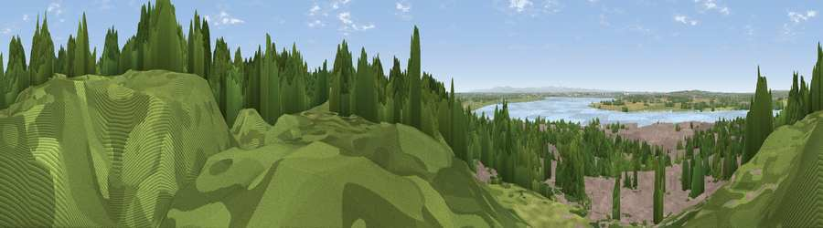

Viewpoint near Weston
#19732 in England · top 46% of its area beats it · near WestonWhere it is
The exact computed spot (SJ 50516 81546). Click the marker for map links.
The view, rendered

A 360° render of this exact spot computed from the terrain model, tree cover and land cover — summer colours, afternoon light, calibrated against photographs of famous viewpoints. Real trees, hedges and buildings will differ in detail.
The panorama
Grey silhouette: terrain skyline in each direction (720 bearings, Earth curvature and refraction included). Dashed green: skyline with trees (+15 m) and buildings (+8 m) as obstacles. Blue strip: how far the ground is visible on each bearing.
Where the view opens
Wedge length = distance to the farthest visible ground on that bearing (vegetation-aware). Rings at 10, 25 and 50 km.
What fills the view
30% woodland · 28% built-up · 20% water · 18% grassland · 4% cropland
Angular shares of the visible panorama (visual magnitude), not map area. Landscape diversity 0.65 (0–1 Shannon).
Key numbers
More beautiful places nearby
The staircase of upgrades: each row has a higher view potential than everything closer. Driving times are estimates from straight-line distance, calibrated against real road routing — check an actual route before setting out.
| Place | Direction | Drive | Score |
|---|---|---|---|
| Hutchinson's Hill | NNW · 3 km | ~7 min | 57.4 |
| Halton Hill | E · 3 km | ~8 min | 69.0 |
| Frodsham War Memorial | SSE · 5 km | ~10 min | 71.4 |
| Beacon Hill | SSE · 5 km | ~11 min | 74.3 |
| Helsby Hill | SSW · 6 km | ~13 min | 74.6 |
| Viewpoint near Bulkeley | S · 26 km | ~42 min | 76.8 |
| Viewpoint near Harthill | S · 26 km | ~42 min | 80.5 |
| White Brow | NNE · 34 km | ~53 min | 82.9 |
53.32850, -2.74445 · source: osm viewpoint · position refined by local search. Computed location — check access rights before visiting.